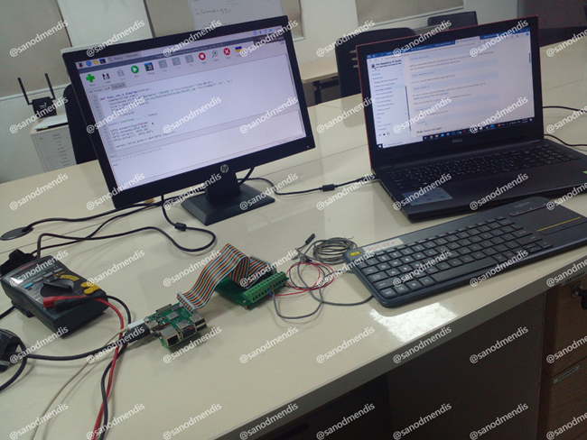
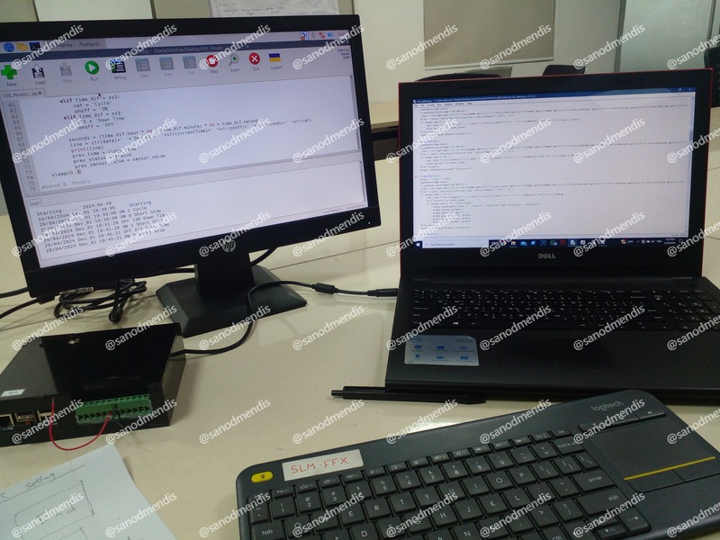

A Raspberry Pi–based Industrial IoT solution designed to monitor and calculate Overall Equipment Effectiveness (OEE) of factory machines in real-time using Python. Developed as a lightweight edge device, this system merges hardware craftsmanship with software ingenuity, making it an ideal low-cost solution for SMEs aiming to improve operational efficiency through data-driven decision-making.
Hardware Foundation & Circuit Design
The system uses a custom-built sensor interface circuit engineered by Mr. Prasad Karunarathne. This circuit connects key industrial sensors to the Raspberry Pi and integrates an RTC (Real-Time Clock) battery module to ensure reliable timekeeping in power outages or offline scenarios.
Hardware Components:
- Raspberry Pi as the main processing unit
- Custom sensor interface circuit for industrial sensor connectivity
- RTC battery module for reliable timekeeping during power outages
- Industrial-grade sensors for cycle counts and downtime detection
Phase 01: Local Logging & Offline Reporting
In the initial implementation, the device focused on robust offline functionality and local data management. This approach ensured continuous operation even in environments with limited connectivity.
Core Capabilities:
- Real-time signal capture from machine sensors (cycle counts, downtime triggers)
- Automated calculation of core OEE metrics (Availability, Performance, Quality)
- Structured data storage in .csv and .txt formats for reliability
- Scheduled email reporting (twice daily) via SMTP to stakeholders
- Offline operation capability ensuring data continuity

Raspberry Pi-based OEE Reader with custom sensor interfacePhase 02: Cloud Integration & Centralized Monitoring

Enhanced system with cloud integration and centralized monitoringThe second phase evolved the system with cloud capabilities, enabling centralized data management and multi-device monitoring across the factory floor.
Cloud Enhancements:
- Integration with Cloud SQL for centralized data from multiple devices
- Secure HTTPS data transmission with periodic syncing
- Remote dashboard compatibility for real-time OEE visualization
- Multi-device management and monitoring capabilities
Advanced Features & Future Roadmap
Implemented Additions:
- Remote dashboard compatibility for supervisors and managers
- Basic fault detection and alerting using threshold analysis
- Anomaly detection for unexpected downtime and cycle irregularities
Future Development Plans:
- MQTT-based real-time streaming to reduce latency and improve scalability
- OTA (Over-The-Air) updates for remote firmware and script management
- SCADA system integration with Modbus RTU/TCP protocol support
- Grafana/Node-RED dashboard for real-time insights and historical analysis
- Edge analytics with TensorFlow Lite for predictive maintenance models
Impact & Technical Achievement
This OEE Reader IoT Device project demonstrates the successful integration of edge computing, industrial sensors and cloud technologies to create a comprehensive manufacturing monitoring solution. The system's evolution from offline logging to cloud-integrated monitoring showcases adaptability and scalability in industrial IoT implementations.
By combining reliable hardware design with robust software architecture, the solution provides SMEs with an accessible path to digital transformation and data-driven operational improvements.